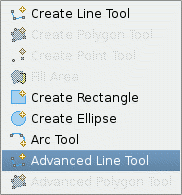
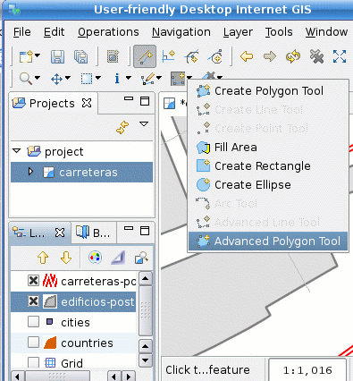

Modes for Create Geometry Tools (under development)
Applying temporary constrains to vertex editing while creating a geometry
| Warning This is work in progress. There are a couple known issues to be solved yet. So, while you're welcome and encouraged to try this out, be aware that this functionality is not based on production code and feel free to send us your comments and bug reports to the uDig devel mailing list. |
Intro
uDig is getting better for digitizing purposes, by expanding the editing possibilities while maintaining simple and consistent interactions.
Edit Modes are a mean to apply temporary constraints to the allowable location of a vertex while creating a Geometry.
This means that, while you're creating a LineString or a Polygon, you can modify the standard behaviour of the Create Line Tool or the Create Polygon Tool so uDig can assist you, for example, to allow only orthogonal line segments, to snap the vertex to be added up to the closest point on another line segment, to draw segments parallel to another one, etc.
|
As this is work in progress, two new create tools have been incorporated to the create geometries drop down button on the uDig toolbar, as shown in Figure 1 and Figure 2. They might well end up being merged on the standard Create Line Tool and Create Polygon Tool. But by now you just have to select the Advanced Line Tool or Advanced Polygon Tool to use this new functionality. |
|  |  |
| Figure 1 Select Advanced Line Tool to create LineStrings | Figure 2 Select Advanced Polygon Tool to create Polygons |
Modes
Once you selected one of the available geometry creation tools as shown above, you can start digitizing as usual.
At any time, you can choose to select a mode from the Modes Toolbar (Figure 3). The Modes Toolbar contains a series of buttons. A single button may be active at a time. While active, this button will apply a constraint or an extra behaviour to the creation tool in use.

Figure 3 Edit Modes Toolbar
Edit Modes and Snapping Behaviour
Some Edit Modes use the snapping behaviour for different purposes. Depending on the mode chosen, whether it is for snapping the next vertex to another vertex, or for selecting a reference geometry to apply a constraint upon, the lookup of the Snap Behaviour will follow the preference set on the Edit Tool preference page accessible through the Window->Preferences menu option, as shown in Figure 4.

Figure 4 setting the snap behaviour preference
Available Modes
The following edit modes are available while creating a new Geometry:
- Ortho Mode —
 Applies a constraint to draw orthogonal lines to the map axis
Applies a constraint to draw orthogonal lines to the map axis - Parallel Mode —
 Applies a constraint to draw line segments parallel to another one
Applies a constraint to draw line segments parallel to another one - Snap to Line Mode —
 Snaps the vertex to add to the closest point over a line segment
Snaps the vertex to add to the closest point over a line segment - Snap to Vertex Mode —
 Snaps the vertex to add to the closest one in another Feature
Snaps the vertex to add to the closest one in another Feature
Caveats
So you were warned at the top of the page that there were a couple known issues to be solved yet, and still got to this point, thanks. So these are those couple things that still need to be fixed:
- The Modes Toolbar should be visible only when one of the applicable geometry creation tool is selected.
- It is not possible to deactivate a Mode button in the Modes Toolbar without activating another mode.
- There should be a way to identify the "applicability" of a mode depending on the Edit Tool selected.
- The Modes Toolbar is missplaced, it should appear next to the edit tools toolbar.
- An extension point needs to be defined so external plug ins can contribute extra modes.
All this stuff is planned to be fixed in a later iteration so keep tuned.
{kind=link}
{kind=link}